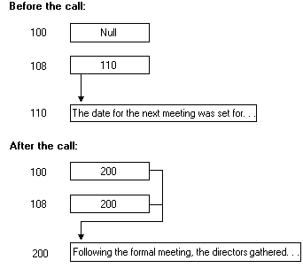

Unlike unique pointers, full pointers support aliasing. This means that multiple pointers can refer to the same data, as shown in the following figure:

A full pointer has the following characteristics:
Use the [ ptr ] attribute to specify a full pointer, as shown in the following example:
/* IDL file */
[
uuid(ba209999-0c6c-11d2-97cf-00c04f8eea45),
version(1.0)
]
interface FullPtrInterface
{
void RemoteFn([in,ptr,string]) char *ptrName1,
[in,ptr,string] char *ptrName2);
}
In this example the parameters ptrName1 and ptrName2 are defined as full pointers to a string. It is possible for both pointers to point to the same memory address containing a single string.
[ptr] is required when providing aliasing support. However, since it requires the most processing of all the pointers available in RPC, it is not recommended for most applications.
Â
Â